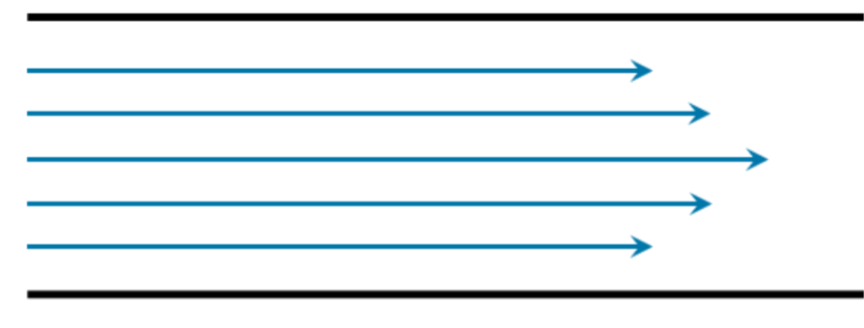
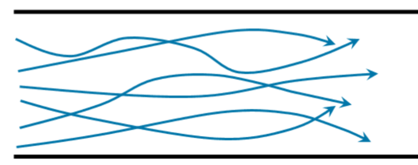
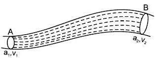
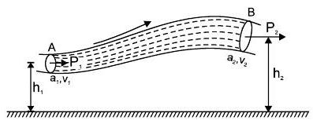
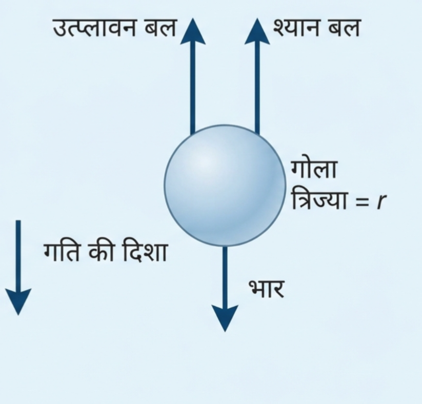

उत्तर - तरल में मुख्यतः दो प्रकार का प्रवाह होता है:
1. धारारेखी प्रवाह (Streamline Flow) - इसमें तरल के कण निश्चित एवं नियमित धारारेखाओं के along प्रवाहित होते हैं।

2. अशांत प्रवाह (Turbulent Flow) - इसमें तरल के कण अनियमित एवं अव्यवस्थित रूप से प्रवाहित होते हैं।

| क्रमांक | धारारेखी प्रवाह | अशांत प्रवाह |
|---|---|---|
| 1 | तरल कण नियमित पथ पर चलते हैं। | तरल कण अनियमित पथ पर चलते हैं। |
| 2 | प्रवाह में व्यवस्थित धारारेखाएँ बनती हैं। | प्रवाह में व्यवस्थित धारारेखाएँ नहीं बनती हैं। |
| 3 | तरल की गति अपेक्षाकृत कम होती है। | तरल की गति अपेक्षाकृत अधिक होती है। |
| 4 | इसमें ऊर्जा की हानि कम होती है। | इसमें ऊर्जा की हानि अधिक होती है। |
उत्तर - वह अधिकतम वेग, जिस तक किसी तरल का प्रवाह धारारेखी रहता है, क्रांतिक वेग कहलाता है। क्रांतिक वेग से अधिक वेग होने पर तरल का प्रवाह अशांत हो जाता है।
उत्तर - तरल की विभिन्न परतों के बीच आपेक्षिक गति का विरोध करने वाले आंतरिक घर्षण के गुण को श्यानता कहते हैं।
ताप का प्रभाव -
1. द्रवों में ताप बढ़ाने पर श्यानता घटती है।
2. गैसों में ताप बढ़ाने पर श्यानता बढ़ती है।
उत्तर - आदर्श तरल की श्यानता शून्य होती है।
अर्थात् आदर्श तरल में आंतरिक घर्षण नहीं होता है।
उत्तर - तरल की विभिन्न परतों के बीच आपेक्षिक गति का विरोध करने वाले आंतरिक घर्षण बल को श्यान बल कहते हैं।
न्यूटन के अनुसार श्यान बल निम्नलिखित तीन कारकों पर निर्भर करता है -
(i) श्यान बल $F$, परतों के संपर्क तल के क्षेत्रफल $A$ के अनुक्रमानुपाती होता है।
(ii) श्यान बल $F$, परतों के आपेक्षिक वेग $dv$ के अनुक्रमानुपाती होता है।
(iii) श्यान बल $F$, परतों के बीच की लम्बवत दूरी $dx$ के व्युत्क्रमानुपाती होता है।
अतः उपर्युक्त सभी संबंधों को मिलाने पर -
अतः,
यहाँ $\eta$ श्यानता गुणांक है तथा $\frac{dv}{dx}$ को वेग प्रवणता कहते हैं। ऋणात्मक चिन्ह यह दर्शाता है कि श्यान बल गति की दिशा के विपरीत लगता है।
उत्तर - किसी द्रव का श्यानता गुणांक वह बाह्य बल है, जो एकांक क्षेत्रफल वाली दो परतों के बीच एकांक वेग प्रवणता बनाए रखने के लिए आवश्यक होता है।
SI मात्रक - $N\,s\,m^{-2}$ या $Pa\,s$
विमीय सूत्र -
क्रांतिक वेग - वह अधिकतम वेग, जिस तक किसी तरल का प्रवाह धारारेखी रहता है, क्रांतिक वेग कहलाता है। क्रांतिक वेग से अधिक वेग होने पर तरल का प्रवाह अशांत हो जाता है।
प्रयोगों द्वारा पाया गया कि क्रांतिक वेग $v_c$ -
तीनों को मिलाने पर -
जहाँ $R_e$ एक नियतांक है जिसे रेनॉल्ड संख्या कहते हैं।
उत्तर - रेनॉल्ड संख्या एक विमाहीन राशि है, जो यह बताती है कि किसी द्रव का प्रवाह धारारेखी है या अशांत।
जहाँ $\rho$ = द्रव का घनत्व, $v$ = द्रव का वेग, $d$ = नली का व्यास तथा $\eta$ = श्यानता गुणांक है।
महत्व -
1. $R_e < 1000$ होने पर प्रवाह सामान्यतः धारारेखी होता है।
2. $R_e > 2000$ होने पर प्रवाह सामान्यतः अशांत होने लगता है।
3. $R_e$ के बीच के मानों में प्रवाह संक्रमण अवस्था में हो सकता है।
उत्तर -
1. असम्पीड्य द्रव - वह द्रव जिसके ऊपर दाब लगाने पर उसके आयतन या घनत्व में कोई परिवर्तन नहीं होता है, असम्पीड्य द्रव कहलाता है।
2. अश्यान द्रव - वह द्रव जिसमें उसकी विभिन्न परतों के बीच आपेक्षिक गति होने पर कोई आंतरिक घर्षण बल नहीं होता है, अश्यान द्रव कहलाता है।
उत्तर - वह द्रव जो असम्पीड्य तथा अश्यान होता है, अर्थात् जिसका घनत्व स्थिर रहता है और जिसमें आंतरिक घर्षण नहीं होता, आदर्श द्रव कहलाता है।
उत्तर -
अविरतता का सिद्धांत - यदि कोई आदर्श द्रव किसी असमान अनुप्रस्थ परिच्छेद वाली नली में धारारेखीय प्रवाह में बह रहा हो, तो नली के प्रत्येक स्थान पर उसके अनुप्रस्थ परिच्छेद के क्षेत्रफल तथा द्रव के वेग का गुणनफल नियत रहता है।
अतः नली के दो स्थानों पर -
इसे सातत्य समीकरण कहते है।
उपपत्ति -

$1$ सेकण्ड में सिरे $A$ से द्रव द्वारा तय की गई दूरी $v_1$ होगी। अतः $A$ से प्रति सेकण्ड प्रवेश करने वाले द्रव का आयतन -
अतः सिरे $A$ से प्रति सेकण्ड प्रवेश करने वाले द्रव का द्रव्यमान -
इसी प्रकार सिरे $B$ से प्रति सेकण्ड बाहर निकलने वाले द्रव का द्रव्यमान -
चूँकि नली में द्रव कहीं भी एकत्रित नहीं होता है, इसलिए द्रव्यमान संरक्षण के सिद्धांत से -
दोनों पक्षों में $\rho$ समान होने के कारण -
इसे सांतत्य समीकरण कहते हैं।
इससे स्पष्ट है कि नली का क्षेत्रफल कम होने पर द्रव का वेग बढ़ जाता है तथा क्षेत्रफल अधिक होने पर द्रव का वेग कम हो जाता है।
उत्तर - जब कोई तरल एक स्थान से दूसरे स्थान तक बहता है, तो उसमें मुख्यतः निम्नलिखित तीन प्रकार की ऊर्जाएँ होती हैं -
(1) गतिज ऊर्जा
प्रवाहित तरल में उसके वेग के कारण जो ऊर्जा होती है उसे गतिज ऊर्जा कहते है।
यदि तरल का द्रव्यमान $m$ तथा वेग $v$ है, तो उसकी गतिज ऊर्जा $ = \frac{1}{2}mv^2$
एकांक द्रव्यमान की गतिज ऊर्जा $ = \frac{v^2}{2}$
एकांक आयतन की गतिज ऊर्जा $ = \frac{1}{2}\rho v^2$
(2) स्थितिज ऊर्जा
पृथ्वी की सतह से ऊँचाई पर स्थित प्रवाहित तरल में उसकी स्थिति के कारण जो ऊर्जा होती है उसे स्थितिज ऊर्जा होती है।
यदि तरल का द्रव्यमान $m$ तथा ऊँचाई $h$ है, तो स्थितिज ऊर्जा $= mgh$
एकांक द्रव्यमान की स्थितिज ऊर्जा $= gh$
एकांक आयतन की स्थितिज ऊर्जा $ \rho gh$
(3) दाब ऊर्जा
प्रवाहित तरल पर दाब के कारण उसमें जो ऊर्जा होती है उसे दाब ऊर्जा कहते होती है।
यदि तरल का दाब $P$, तथा आयतन $V$ हो तो द्रव की दाब ऊर्जा $= PV$
एकांक आयतन की दाब ऊर्जा $ = P$
एकांक द्रव्यमान की दाब ऊर्जा $ = \frac{PV}{m} = \frac{P}{\rho}$
उत्तर - प्रवाहित द्रव की विभिन्न ऊर्जाओं से संबंधित शीर्ष निम्नलिखित हैं -
(1) वेग शीर्ष - द्रव के एकांक भार की गतिज ऊर्जा को वेग शीर्ष कहते हैं।
वेग शीर्ष $= \frac{mv^2}{2mg}= \frac{v^2}{2g}$
(2) स्थैतिक शीर्ष - द्रव के एकांक भार की स्थितिज ऊर्जा को स्थैतिक शीर्ष कहते हैं।
स्थैतिक शीर्ष $=\frac{mgh}{mg}=h$
(3) दाब शीर्ष - द्रव के एकांक भार की दाब ऊर्जा को दाब शीर्ष कहते हैं।
दाब शीर्ष $= \frac{PV}{mg}=\frac{P}{\rho g}$
उत्तर किसी आदर्श, असम्पीड्य तथा अश्यान द्रव के धारारेखीय प्रवाह में द्रव के प्रत्येक बिंदु पर दाब ऊर्जा, गतिज ऊर्जा तथा स्थितिज ऊर्जा का प्रति इकाई आयतन योग नियत रहता है।
$P + \frac{1}{2}\rho v^2 + \rho gh =$ नियतांक
अतः नली के दो स्थानों पर -
इसे बरनौली का समीकरण कहते हैं।
उपपत्ति -

माना कि कोई आदर्श द्रव असमान अनुप्रस्थ परिच्छेद वाली नली $AB$ में धारारेखीय प्रवाह में बह रहा है। सिरे $A$ पर द्रव का दाब $P_1$, वेग $v_1$ तथा ऊँचाई $h_1$ है। सिरे $B$ पर द्रव का दाब $P_2$, वेग $v_2$ तथा ऊँचाई $h_2$ है।
माना कि $t$ समय में द्रव का $V$ आयतन सिरे $A$ से प्रवेश करता है और उतना ही आयतन सिरे $B$ से बाहर निकलता है। यदि द्रव का घनत्व $\rho$ हो, तो द्रव का द्रव्यमान -
सिरे $A$ पर दाब बल द्वारा किया गया कार्य $= P_1V$
सिरे $B$ पर दाब बल द्वारा किया गया कार्य $= P_2V$
अतः दाब बलों द्वारा किया गया कुल कार्य $=P_1V-P_2V$
सिरे $A$ पर द्रव की प्रारंभिक ऊर्जा $=\frac{1}{2}mv_1^2+mgh_1$
सिरे $B$ पर द्रव की अंतिम ऊर्जा $=\frac{1}{2}mv_2^2+mgh_2$
इसलिए द्रव की कुल यांत्रिक ऊर्जा में परिवर्तन -
अब कार्य-ऊर्जा सिद्धांत से -
दाब बल द्वारा किया गया कार्य = द्रव की कुल यांत्रिक ऊर्जा में परिवर्तन
समीकरण (1) से मान रखने पर -
यही बरनौली का प्रमेय है।
उत्तर - बर्नोली प्रमेय के प्रमुख अनुप्रयोग निम्नलिखित हैं -
(1) वेंचुरीमीटर - इसका उपयोग पाइप में बहने वाले द्रव के प्रवाह की दर ज्ञात करने में किया जाता है।
(2) पिटोट नली - इसका उपयोग बहते हुए द्रव या गैस के वेग को मापने में किया जाता है।
(3) कार्ब्यूरेटर - इसका उपयोग वायु के तीव्र प्रवाह द्वारा ईंधन को खींचकर वायु के साथ मिलाने में किया जाता है।
(4) विमान के पंखों का उड़ना - विमान के पंखों के ऊपर और नीचे वायु के वेग में अंतर के कारण दाब में अंतर उत्पन्न होता है, जिससे विमान को ऊपर उठाने वाला बल प्राप्त होता है।
(5) स्प्रे पम्प - इत्र की शीशी, कीटनाशक स्प्रे तथा स्प्रे पम्प में द्रव को ऊपर खींचने के लिए बर्नोली प्रमेय के सिद्धांत का उपयोग किया जाता है।
(6) तेज आँधी में छत का उड़ना - तेज हवा के कारण छत के ऊपर वायु का दाब कम हो जाता है, जबकि अंदर का दाब अधिक रहता है। इस दाब-अंतर के कारण छत ऊपर उठ सकती है।
जब कोई छोटा, दृढ़ तथा चिकना गोला किसी अनंत विस्तार वाले समांगी श्यान द्रव में सीमांत वेग से गति करता है, तो उस गोले पर उसकी गति के विपरीत दिशा में एक श्यान बल कार्य करता है। इस बल का मान -
उपर्युक्त सभी को मिलाने पर -
जहाँ $6\pi$ अनुक्रमानुपाती नियतांक है।

जब किसी गोले को श्यान द्रव में गिराया जाता है तो शुरू में उसका वेग बढ़ता है, परन्तु श्यान बल बढ़ने के कारण कुछ समय बाद वह एक नियत वेग से गिरने लगता है। इसी नियत वेग को सीमान्त वेग कहते हैं।
माना $r$ त्रिज्या तथा $\rho$ घनत्व का एक गोला $\eta$ श्यानता गुणांक तथा $\sigma$ घनत्व वाले तरल में गिर रहा है। गोले पर लगने वाले तीन बल -
सीमान्त वेग की स्थिति में -
जब कोई व्यक्ति वायुयान से कूदता है तो प्रारम्भ में उसका वेग बढ़ता है। जैसे-जैसे वह नीचे आता है वायु का श्यान बल उसके वेग को कम करने का प्रयास करता है। जैसे ही पैराशूट खुलता है तो श्यान बल बहुत बढ़ जाता है जिससे व्यक्ति का वेग बहुत कम हो जाता है और कुछ समय बाद उसका त्वरण शून्य हो जाता है। अतः वह सीमान्त वेग प्राप्त कर लेता है और सुरक्षित पृथ्वी पर आ जाता है।
वायु में जलवाष्प, धुआँ और धूल के कण उपस्थित रहते हैं। जलवाष्प इन कणों पर संघनित होकर छोटी बूँदें बना देती है। इन बूँदों पर वायु ऊपर की ओर श्यान बल लगाती है। कुछ समय बाद ये बूँदें अपना सीमान्त वेग प्राप्त कर लेती हैं परन्तु आकार छोटा होने के कारण इनका सीमान्त वेग बहुत कम होता है। सीमान्त वेग कम होने के कारण ये बूँदें नीचे नहीं गिर पाती हैं और वायु में तैरने लगती हैं, इन्हें ही हम बादल कहते हैं।
जब जलवाष्प की छोटी-छोटी बूँदें बनती हैं तो वे हवा में तैरती रहती हैं क्योंकि उन पर ऊपर की ओर श्यान बल लगता है। जब बूँदें आपस में मिलकर बड़ी हो जाती हैं तो उनका भार बढ़ जाता है। जब गुरुत्व बल श्यान बल से अधिक हो जाता है तो ये बूँदें सीमान्त वेग से नीचे की ओर गिरने लगती हैं, जिसे हम वर्षा कहते हैं। बूँद का आकार बढ़ने पर उसका सीमान्त वेग भी बढ़ जाता है।